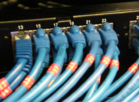

Dos procesos se ejecutan de forma paralela, si las instrucciones de ambos se están ejecutando realmente de forma simultánea. Esto sucede en la actualidad en sistemas que poseen más de un núcleo de procesamiento.
La programación paralela y distribuida consideran los aspectos conceptuales y físicos de la computación paralela; siempre con el objetivo de mejorar las prestaciones aprovechado la ejecución simultánea de tareas.
Tanto en la programación paralela como distribuida, existe ejecución simultánea de tareas que resuelven un problema común. La diferencia entre ambas es:
- La programación paralela se centra en microprocesadores multinúcleo (en nuestros PC y servidores); o ,sobre los llamados supercomputadores, fabricados con arquitecturas específicas, compuestos por gran cantidad de equipos idénticos interconectados entre sí, y que cuentan son sistemas operativos propios.
- La programación para distribuida, en sistemas formados por un conjunto de ordenadores heterogéneos interconectados entre sí, por redes de comunicaciones de propósito general: redes de área local, metropolitana; incluso, a través de Internet. Su gestión se realiza utilizando componentes, protocolos estándar y sistemas operativos de red.
En la computación paralela y distribuida:

- Cada procesador tiene asignada la tarea de resolver una porción del problema.
- En programación paralela, los procesos pueden intercambiar datos, a través de direcciones de memoria compartidas o mediante una red de interconexión propia.
- En programación distribuida, el intercambio de datos y la sincronización se realizará mediante intercambio de mensajes.
- El sistema se presenta como una unidad ocultando la realidad de las partes que lo forman.